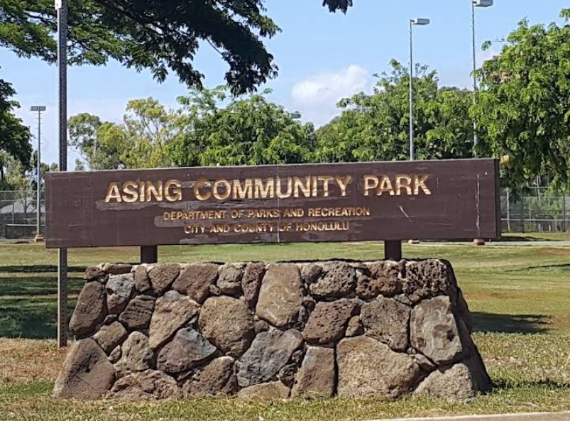

Asing Community Park
Place: Asing Community Park, ʻEwa, Oʻahu
Type: Public park / recreational facility
Namesake: John M. Asing, nine-term member of the Honolulu Board of Supervisors
Story it tells: How a small plantation-era park dedicated in 1939 to honor a Honolulu supervisor was replaced by a community park as the surrounding lands transitioned from sugarcane fields to neighborhoods.

Asing Community Park in ʻEwa honors John M. Asing, a longtime member of the Honolulu Board of Supervisors, the predecessor of today's Honolulu City Council. A Republican who served nine terms, Asing represented Oʻahu during a period when the island's population was booming and there was a growing demand for infrastructure and recreation development. Among his priorities was the development of neighborhood parks, including one for the plantation families living in Honouliuli. His advocacy helped bring a public recreational space to a rural community whose daily life revolved around the surrounding sugar industry.
The original Asing Park was dedicated in April 1939 on approximately three acres in Honouliuli, honoring the supervisor who had championed its creation. At the time, the surrounding ʻEwa Plain was dominated by sugarcane fields and plantation villages connected to the ʻEwa Plantation Company. The park provided a gathering and recreational space for local families, offering a public amenity that was not particularly common in plantation communities. Its dedication reflected both Asing's efforts and the growing recognition that rural neighborhoods needed public spaces.
During the late twentieth century, the landscape surrounding Honouliuli underwent a dramatic transformation. As plantation agriculture collapsed, former sugarcane lands gave way to golf courses, roads, and residential development. The original Asing Park was demolished during development of the nearby West Loch Golf Course, which opened in 1990. As the surrounding lands were redeveloped, new public recreational space was incorporated into the area's residential planning. A replacement park was established nearby along Renton Road, expanding the original concept into a larger community facility with athletic fields, courts, and other park amenities.
The modern Asing Community Park opened in November 1996, preserving the name of a park that had disappeared. It serves a community vastly different from the plantation village that surrounded its predecessor. Its history illustrates how a public space can be displaced by development and later reestablished nearby, carrying its original identity into a dramatically different neighborhood. More than eight decades after the first dedication, the name also preserves the memory of John M. Asing, a once-prominent public servant whose contributions might otherwise gradually fade from local memory.